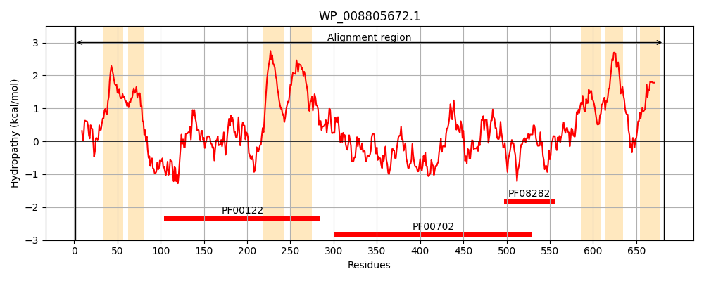
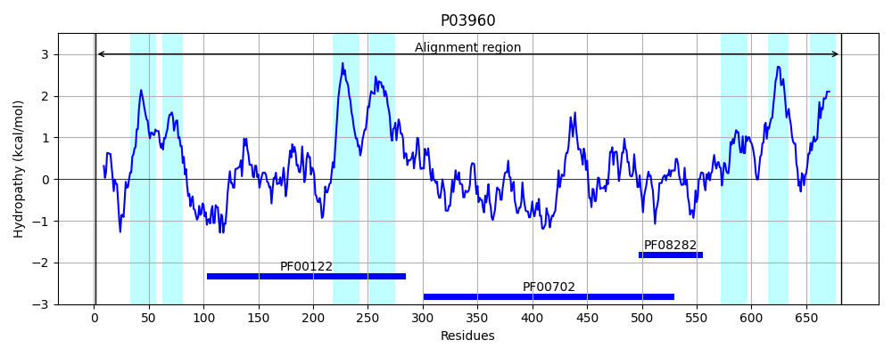
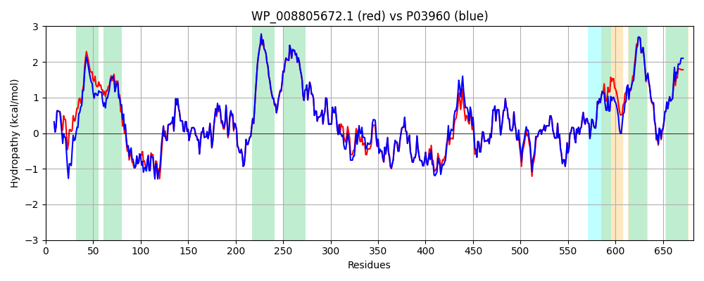

Hit Accession: P03960
Hit TCID: 3.A.3.7.1
Hit Description: gnl|BL_ORD_ID|8287 gnl|TC-DB|P03960|3.A.3.7.1 Potassium-transporting ATPase B chain (EC 3.6.3.12) (Potassium- translocating ATPase B chain) (ATP phosphohydrolase [potassium- transporting] B chain) (Potassium binding and translocating subunit B) - Escherichia coli.
Mach Len: 682
e:0.000000
Query TMS Count : 7
Hit TMS Count: 7
TMS-Overlap Score: 7.500000
Predicted Substrates:CHEBI:8345;potassium(1+)
BLAST Alignment:
Score: 3088 , Bit scores: 1194 bits, E-value: 0.0e+00, Alignment length: 682, Percentage identity: 90
Query: 1 MSRKQLALLEPTLVRQALLDAVKKLSPMVQWRNPVMFIVWVGSLLTTLLAIAMAGGALTGSATFTAAVSIWLWFTVLFANFAEAMAEGRSKAQANSLKGVKKTAFARKLRAPQHDATVDHVPAEDLRKGDVVLVEAGDIIPCDGEVIEGGASVDESAITGESAPVIRESGGDFASVTGGTRILSDWLVIRCSVNPGETFLDRMIAMVEGAQRRKTPNEIALTILLIALTLVFLLATATIWPFSAWSGNAVSVTVLVALLVCLIPTTIGGLLSAIGVAGMSRMLGANVIATSGRAVEAAGDVDVLLLDKTGTITLGNRQASAFLPARGVEERTLADAAQLSSLADETPEGRSIVVLAKQRFNLRERDLQSLHATFVPFTAQTRMSGINIDQRMIRKGSVDAIRRHVEANGGHFPADVDKQVEEVARQGATPLVVAEGEKVLGIISLKDIVKGGIKERFAQLRKMGIKTVMITGDNRLTAAAIAAEAGVDDFLAEATPEAKLALIRQYQSEGRLVAMTGDGTNDAPALAQADVAVAMNSGTQAAKEAGNMVDLDSNPTKLIEVVHIGKQMLMTRGSLTTFSIANDVAKYFAIIPAAFAAVYPQLAMLNVMGLHSPSSAILSAVIFNALIIVFLIPLALKGVSYRPLSASAMLRRNLWIYGLGGLLVPFIGIKAIDLLLTLSGLV 682
MSRKQLAL EPTLV QAL +AVKKL+P QWRNPVMFIVW+GSLLTT ++IAMA GA+ G+A F+AA+S WLW TVLFANFAEA+AEGRSKAQANSLKGVKKTAFARKLR P++ A D VPA+ LRKGD+VLVEAGDIIPCDGEVIEGGASVDESAITGESAPVIRESGGDFASVTGGTRILSDWLVI CSVNPGETFLDRMIAMVEGAQRRKTPNEIALTILLIALT+VFLLATAT+WPFSAW GNAVSVTVLVALLVCLIPTTIGGLLSAIGVAGMSRMLGANVIATSGRAVEAAGDVDVLLLDKTGTITLGNRQAS F+PA+GV+E+TLADAAQL+SLADETPEGRSIV+LAKQRFNLRERD+QSLHATFVPFTAQ+RMSGINID RMIRKGSVDAIRRHVEANGGHFP DVD++V++VARQGATPLVV EG +VLG+I+LKDIVKGGIKERFAQLRKMGIKTVMITGDNRLTAAAIAAEAGVDDFLAEATPEAKLALIRQYQ+EGRLVAMTGDGTNDAPALAQADVAVAMNSGTQAAKEAGNMVDLDSNPTKLIEVVHIGKQMLMTRGSLTTFSIANDVAKYFAIIPAAFAA YPQL LN+M LHSP SAILSAVIFNALIIVFLIPLALKGVSY+PL+ASAMLRRNLWIYGLGGLLVPFIGIK IDLLLT+ GLV
Sbjct: 1 MSRKQLALFEPTLVVQALKEAVKKLNPQAQWRNPVMFIVWIGSLLTTCISIAMASGAMPGNALFSAAISGWLWITVLFANFAEALAEGRSKAQANSLKGVKKTAFARKLREPKYGAAADKVPADQLRKGDIVLVEAGDIIPCDGEVIEGGASVDESAITGESAPVIRESGGDFASVTGGTRILSDWLVIECSVNPGETFLDRMIAMVEGAQRRKTPNEIALTILLIALTIVFLLATATLWPFSAWGGNAVSVTVLVALLVCLIPTTIGGLLSAIGVAGMSRMLGANVIATSGRAVEAAGDVDVLLLDKTGTITLGNRQASEFIPAQGVDEKTLADAAQLASLADETPEGRSIVILAKQRFNLRERDVQSLHATFVPFTAQSRMSGINIDNRMIRKGSVDAIRRHVEANGGHFPTDVDQKVDQVARQGATPLVVVEGSRVLGVIALKDIVKGGIKERFAQLRKMGIKTVMITGDNRLTAAAIAAEAGVDDFLAEATPEAKLALIRQYQAEGRLVAMTGDGTNDAPALAQADVAVAMNSGTQAAKEAGNMVDLDSNPTKLIEVVHIGKQMLMTRGSLTTFSIANDVAKYFAIIPAAFAATYPQLNALNIMCLHSPDSAILSAVIFNALIIVFLIPLALKGVSYKPLTASAMLRRNLWIYGLGGLLVPFIGIKVIDLLLTVCGLV 682 | Protein Hydropathy Plots: |
|---|
|  |  |
Pairwise Alignment-Hydropathy Plot:
|
|---|
|  |